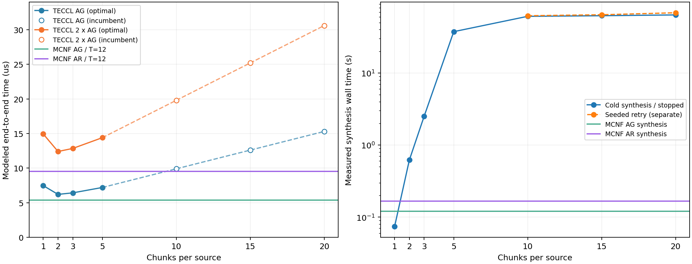

同一份每卡完整向量 0.25 MB，六卡 AllGather 每来源初始 0.25/6 MB，再拆为 c 块；每条有向边 400 Gbps=50 GB/s，每实际活跃步加 0.1 μs。AllReduce 按完整 AllGather 的二倍估算。
本组已验证调度中，2 块的 TECCL 端到端估算最短：AG=6.2 μs，AR=12.4 μs。MCNF T=12 主调度 AG=5.3667 μs、AR=9.5333 μs；后者比 12.4 μs 少 23.12%。不能据此宣称对所有块数或真实硬件全局最优。

| 每来源块数 | 块大小(bytes) | 活跃步 | AG(μs) | AR=2AG(μs) | 冷启动合成/中止(s) | 重试合成(s) | 调度状态 |
|---|---|---|---|---|---|---|---|
| 1 | 41666.67 | 8 | 7.4667 | 14.9333 | 0.074 | — | OPTIMAL |
| 2 | 20833.33 | 12 | 6.2000 | 12.4000 | 0.621 | — | OPTIMAL |
| 3 | 13888.89 | 17 | 6.4222 | 12.8444 | 2.513 | — | OPTIMAL |
| 5 | 8333.33 | 27 | 7.2000 | 14.4000 | 37.421 | — | OPTIMAL |
| 10 | 4166.67 | 54 | 9.9000 | 19.8000 | 61.063 | 62.253 | TIME_LIMIT / 可行上界 |
| 15 | 2777.78 | 81 | 12.6000 | 25.2000 | 62.272 | 64.215 | TIME_LIMIT / 可行上界 |
| 20 | 2083.33 | 108 | 15.3000 | 30.6000 | 63.877 | 68.462 | TIME_LIMIT / 可行上界 |
1/2/3/5 块的原生模型已证明最优；10/15/20 块冷启动各优化 60 秒没有 incumbent，用 5 块调度拼接的初始解另优化 60 秒，均未改进且未证明最优。表中重试不包含种子构造约 0.09/0.19/0.34 秒，也不包含先求得 5 块调度的成本。合成耗时含建模、求解和成功时的导出，排除导入和独立回放；中止行保留实际耗时。这些耗时来自先前归一化模型的真实运行，本次为物理回放，没有新增求解耗时。
| Collective | 活跃步 | 带宽项(μs) | 启动项(μs) | 总时间(μs) | 合成(s) |
|---|---|---|---|---|---|
| allgather | 12 | 4.1667 | 1.2000 | 5.3667 | 0.121 |
| allreduce | 12 | 8.3333 | 1.2000 | 9.5333 | 0.167 |
TECCL 的 alpha 是按 epoch 取整的链路传播延迟，与每活跃步启动费不同；本次不把 0.1 μs 塞入该字段。逐步重新标定时间而不改变路由和并发：每步传输 5/(6c) μs，再加 0.1 μs；所有保存调度均无空 epoch。对固定 c，这只是每 epoch 乘同一个正数，最少完成 epoch 的目标不变。MCNF 是连续分片、可变步长、逻辑 GPU 路由；TECCL 在物理链路逐跳存储转发。这里只比较各自模型的固定调度评估，未针对启动费重新优化 MCNF，也没有硬件实测。
Apple M4 / 24 GiB / conda math / Gurobi 13.0.0 / 四线程 / Seed 42。每项一次运行，时延与算法计算耗时分开报告。所有可行 TECCL 调度均通过容量、因果、无复制、需求完整性回放；MCNF 保存的 z 重新载入并通过 1e-7 原空间验收。